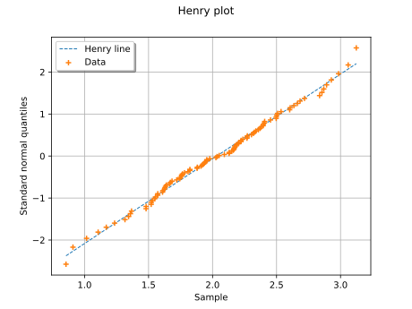

AndersonDarlingNormal¶
- AndersonDarlingNormal(sample, level=0.05)¶
Evaluate whether a sample follows a normal distribution.
Refer to Anderson-Darling test.
- Parameters:
- sample2-d sequence of float
Tested sample.
- levelpositive float, optional
Threshold p-value of the test (= first kind risk), it must be
![< 1]() , equal to 0.05 by default.
, equal to 0.05 by default.
- Returns:
- testResult
TestResult Structure containing the result of the test.
- testResult
Notes
The test is used to check whether the sample follows a normal distribution. This test gives more importance to extreme values.
Examples
>>> import openturns as ot >>> ot.RandomGenerator.SetSeed(0) >>> distribution = ot.Normal() >>> sample = distribution.getSample(30) >>> test_result = ot.NormalityTest.AndersonDarlingNormal(sample) >>> print(test_result) class=TestResult name=Unnamed type=AndersonDarlingNormal binaryQualityMeasure=true p-value threshold=0.05 p-value=0.7268 statistic=0.255405 description=[]
Examples using the function¶

Test Normality